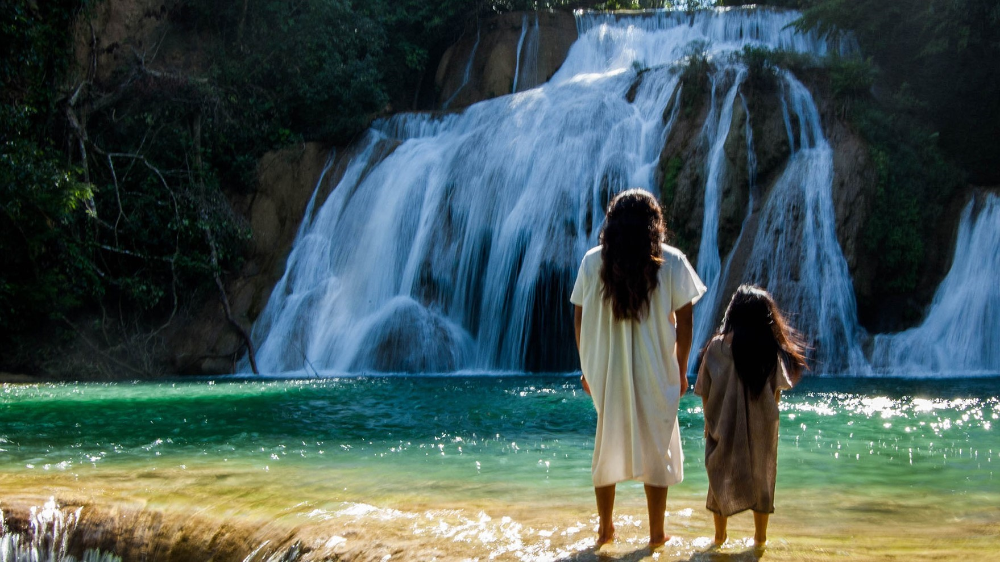
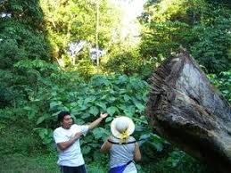

Esta selva cuenta con increíbles zonas arqueológicas que prácticamente están sin descubrirse y que literalmente fueron devorados por la selva.
Para poder conocer y adentrarse la selva lacandona se requieren los servicios de un lacandón. Los lacandones son indígenas mayas que a través de los siglos han sobrevivido en esta selva.
Las cuales son:
Cascada escondida: Esta es una cascada muy cerca del palenque, y pertenece al rio cháncala, el corre en dirección suroeste para luego unirse después con el rio Usumacinta.
Lagunas del dios trueno metzabok: Es una laguna en la selva ubicada en la ribera sur cuyas condiciones únicas favorecen el desarrollo de exuberantes ecosistemas. Hay cuevas con pinturas rupestres de color rojo.
Naha: Cerca de metzabok se encuentra Naha, Aquí hay recorridos por lancha o en canoa, así como caminatas por la selva, visitas a las milpas y talleres artesanales de los lacandones.
Bajlum pakal: Este lugar es ideal para pasear en bicicleta por los senderos entre la selva y observar diversidad de aves.
